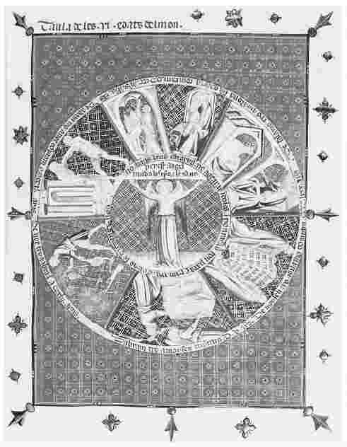
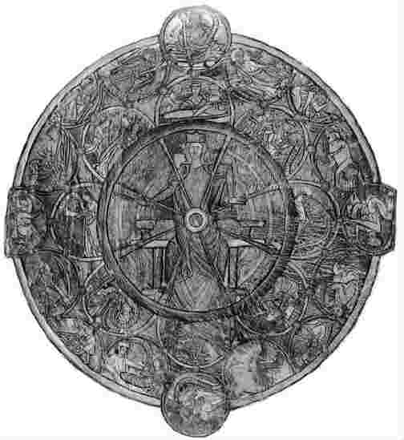
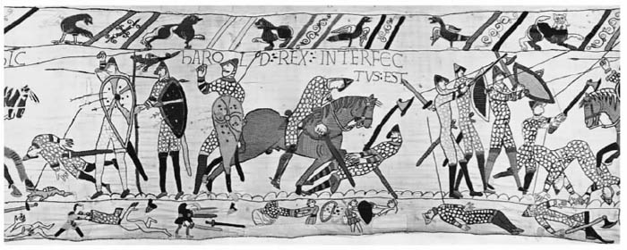
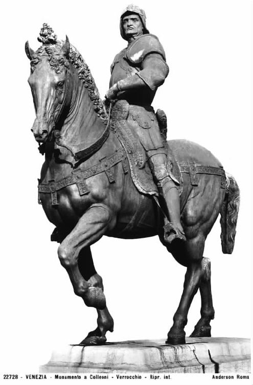
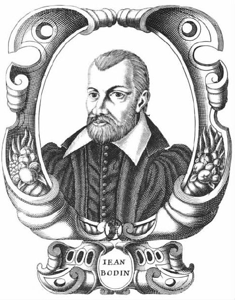
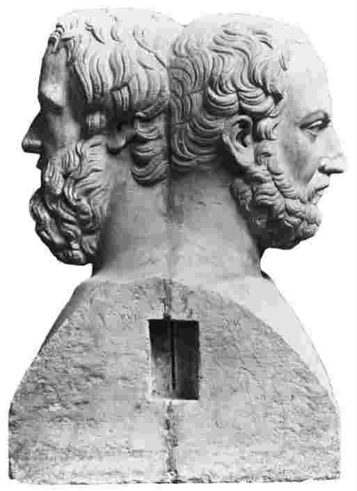

公元前6世纪，一个叫那波尼德斯 [1] 的巴比伦国王发动了一次搜索行动——我们也许可以说是一次早期的考古发掘——来寻找一座古寺庙，一座太阳神庙。他找到了，并把自己的发现记载了下来：
伯那布里亚什国王生活于公元前14世纪，比那波尼德斯发现的沙玛什神庙还要晚七百年。就是说，这座神庙要比那波尼德斯早两个千周年。这种难以置信的时间差距，使那波尼德斯看起来似乎离我们近了些。如果我们将他的发现和记载作为故事的开端、作为我们所知“历史”的第一个片段，这种亲近感还会因为他所扮演的本章叙述之“起点”的角色而加强。这种有联系的感觉很有用，但也可能给我们带来问题：那波尼德斯热衷于寻找太阳神庙，是因为这使他有机会与自己的高贵传统之间建立联系，而这种联系隐含着权力和权威。他对这一发现的理解方式和将其记录下来的动机，不一定与我们自己对历史的兴趣相一致。
我们能否以这种方式，回溯到“历史”作为行动的起点呢？这个问题颇为复杂。问这个问题的时候，我们当然是在进行我们自己的、当代的历史探询。我们可以回过头来将历史本身“历史化”；就是说，去探寻它的根源何在、从何而来、如何演变，以及在不同的时间和地点被用于何种目的。在这里的简单叙述中，我们不得不把焦点放到当前：将过去的历史编纂与我们现在所做的事情进行比较，并且提醒读者，如果说历史作为一门学科随着时间的推移发生了变化，那么它还会继续变化。因而，接下来的故事将会存在巨大的缺漏。不过我想要表明的部分观点是，在某种意义上，一切 历史都希望说出自己当前时代的某些事情。
让我们向前推进一个世纪，看看第一位希腊的历史学家。希罗多德 [3] （公元前484－前425）写下了希腊与波斯之间发生战争的历史原因，此前荷马曾在他的诗歌中涉及过这个题材。在史书的开头，希罗多德讨论了一个关于两国人怎样开始互殴的古老故事。他叙述了波斯人对这个事件的说法：腓尼基人拐走了希腊国王的女儿爱莪；希腊人拐走了腓尼基国王的女儿欧罗巴，然后是另一位公主美狄亚；帕里斯，一个叫普利安的腓尼基统治者的儿子，在这些故事的启发下诱拐了海伦，使她成为自己的妻子。在腓尼基人眼里，这都不是什么大不了的事情：诱拐女人是不道德的，却也用不着大惊小怪，“因为很显然，要是自己不愿意，一个年轻女人是不会让自己被诱拐的”。然而，希腊人采取了过激的反应：他们集结了一支大军去营救特洛伊的海伦，并摧毁了普利安的帝国。所有这些都是由针锋相对的诱拐女人之举引起的。然而，腓尼基历史学家们声称即使这一描述也并不真实：爱莪（最早提到的那个女人）不是被强行带走的，而是与一位腓尼基船长相好后有了身孕，宁愿跟他一道回去而不愿让自己的父母蒙羞。
希罗多德写道：
希罗多德拒绝了波斯人的传说，选择依靠“事实”而不是虚构的看法。在该书之后的部分，他利用一段口述历史表明，海伦和帕里斯实际上从未到达特洛伊，而是滞留在埃及。他分析了荷马史诗中的一些段落，认为这位伟大的诗人实际上知道这一点，却选择接受一个与之不同的虚构故事。不管我们是否相信希罗多德对海伦的历史的新记述，他利用证据将虚构的故事与真实的历史叙述区别开来的努力，使他看起来更像是一位20世纪的历史学家。他的《历史》没有被简单地与他的个人境遇联系起来（像那波尼德斯与太阳神庙那样），而是拥有更多的读者和更广泛的目的（记录和解释过去），这个事实也暗示了希罗多德是我们今天所了解的历史的奠基人。实际上，他有时被称为“历史之父”。
但这里我们又得注意了。尽管希罗多德在某些方面看起来是为人熟知而且“现代的”，在另一些方面却并非如此。他所讲述的历史，有许多涉及我们很难相信的传说：骑在海豚尾巴上的阿里翁，意外杀死自己父亲的阿德拉斯托斯（克罗伊斯收容了他，他却又意外地杀死了克罗伊斯的儿子），特尔斐的神谕 [4] （这里的预言被插入故事当中并且总会变成现实）。这些故事和其他一些故事，与我们认为是更“真实的”关于希腊人与波斯人如何打仗的政治史混杂在一起。希罗多德总是乐于偏离对政治事件的记述，告诉我们当地人的习俗、不同地区的神秘而奇妙的动物，以及任何吸引他的令人难以置信的故事。希罗多德因此也被称为“谎言之父”。但希罗多德本人并不认为这些元素之间有什么区别：事实上，他总是煞费苦心地声称他所说的事情是可信的，因为有见证人证实了这一点。
还有其他理由认为希罗多德与我们不同。首先，希罗多德未必认为自己的“历史”著作与其他类型的著作有什么本质的差别。演变为“历史”的希腊词语最初意味着“询问”，更明确地说，是指一个人能够在相互冲突的描述之间做出明智的选择。将其用于撰写过去，在很大程度上意味着既不同于诗人也不同于哲学家的工作，因而对希腊人来说，也就没有那么重要。它是否成为一种叫作“历史”的独特类型，我们还不清楚，它更可能被视为“非哲学”写作这个更大范围内的一部分。还有，尽管希罗多德写作的原因更接近于我们自己而不是那波尼德斯，但其间仍然有所不同。希罗多德利用过去来提供关于环境和性格的说明，以备当时之用。他这样做是因为在他看来时间是循环的：历史一圈圈地旋转，同样的主题和问题一次次地出现。在他的《历史》中发生的事件常常是由性格缺陷引起的，但在这些缺陷背后隐藏着循环的命运之轮，它（如他前面所说）按照平等的比例，使城市和人民兴起又衰落。例如他说到，克罗伊斯虽然在梦里得到了警告，却无法阻止他儿子（被阿德拉斯托斯意外杀死的那一个）的死亡；他将失去整个帝国，完全是因为狂妄自大（对个人成就的骄傲激起了神灵的愤怒）。有一些20世纪的历史学家也许相信某些主题会在历史中重现，但我想没有人相信命运之轮决定着因果关系。
当基督教产生了第一批历史学家之后，这种时间观念发生了颇有争议的变化。基督教的信仰并不依靠命运之轮，而是认为世界在两个固定的点——造物和天启 [5] ——之间无情地移动。早期基督教历史学家还借助《旧约》假定了人类历史的七个世代。在他们写作之时，前面五个世代已经过去，人类已进入了第六世代，它始于基督诞生，终于基督复临。后面是第七世代，这就是天启的阶段和历史的终结。这个框架就历史意味着什么和人们如何着手探讨历史，提出了完全不同的观念。

图3 奥古斯丁的人类的六个世代（以及由此而来的历史）在这里被描绘成一个圆圈，让人联想到图4所示的命运之轮。将要到来的第七世代是天启的世代。
不过，我们不应该在古典时期和早期基督教时代之间做出过于明确的区分：命运之轮的形象实际上的确为基督教文化所继承，七个世代的观念并未支配基督教历史中的一切书写。不过，真正对历史编纂的演变发生影响的，是一种新颖而紧迫的历史目的。优西比乌斯 [6] 的《教会史》（约写于325年）旨在说服基督徒和异教徒，让他们相信基督教比异教信仰更古老、更理性、更道德也更有效。早期基督徒把历史当作对过去的辩驳式 描述来写。他们这样做是因为，在最初的几个世纪里他们是遭受围攻者，必须保卫受到罗马当局迫害的信仰。提供一部支持其信仰（而反对其他信仰）的历史，是一种获得权威的尝试。在《上帝之城》（约写于426年）中，希波的奥古斯丁 [7] 试图将历史上的教派之争与灵性和邪恶之间的永恒斗争结合起来。这是神学与历史的一次大规模的糅合，但它过于冗长和复杂，难以产生直接的影响。不过，奥古斯丁的学生奥罗修斯 [8] 写了一个更简单、更具辩论性的版本《反世俗的历史》，它要通俗得多。

图4 命运之轮，威廉·德·布莱利斯所作（1235）
通过抄写对自己有利的原始文献，通过坚持《圣经》的历史准确性，通过将自己教派的历史与宏大的线性时间叙事相结合，优西比乌斯和奥罗修斯开始创作权威性的历史。他们的工作还得到了此前历史编纂中另一要素的支持：修辞 的观念。罗马作家萨卢斯特 [9] 和西塞罗 [10] 主张，所有类型的写作都有规则和模式可以遵循，撰写历史也有其独特的规则和模式。历史的“演说者”（或叙述者）应该不偏不倚地说出真相，即使这会冒犯他人；应该按照年代和地理顺序安排内容；应该指出人们有哪些“丰功伟绩”，关注它们的原因，包括其特征和偶然性；应该“用从容流畅的风格沉着地写作”。这些规则的要点在于，照此写出来的历史应该具有说服力、易于被接受。这种修辞要素——由罗马人创造出来并由基督徒加以发展——具有悠久的历史编纂传统。
1067年，一位不知名的作者完成了《忏悔者爱德华的一生》。他将这部作品题献给他的赞助人、英国国王的妻子伊迪丝王后。他写作的目的是颂扬王后的家庭以及伊迪丝本人。然而，他的工作受到了如下事实的妨碍：由于伊迪丝的兄弟哈罗德和托斯蒂格的悲剧性反目，爱德华的统治以灾难而告终。他采取了双重的解决办法：首先，《一生》的第二册描述了爱德华的宗教生活，暗示他引领了另一个世界的拯救之路（这足以弥补在这个世界存在的任何问题而绰绰有余）；其次，通过将王国遭遇的一切麻烦归结为家庭冲突，作者采用了一种逆向的颂扬形式——家庭是多么重要，它自身的问题会引起这么多其他的灾难！不过，《一生》中并没有提到1066年对英国的诺曼征服 [11] 。
伟大的中世纪研究专家理查德·萨瑟恩 [12] 评论道：“一个历史学家能够撰写1066年的灾难却没有提到诺曼征服，那么在这个词的任何最平常的意义上，他都显然不是一个历史学家。”的确不是！《一生》的作者（如萨瑟恩所指出的）不会从这段话中感受到批评之意。虽然他没有提到征服，因为他不想以任何方式贬低爱德华王朝的地位，但他仍然遵循了历史的修辞规则。他用修辞技巧来摆弄“事实”并不是一种花招或借口，而是历史编纂方法的合理组成部分。现代历史学家回顾中世纪的作者，常常关心能在多大程度上相信他们（资料和信任的问题将在下一章讨论）。但是《一生》的作者会认为这是一个无礼的问题：在他自己看来，他正在说出真相。有什么能比遵循已被人们接受的历史修辞规则更值得信赖，更能让历史著作真正完成它理应完成的任务呢？

图5 表现英国诺曼征服的贝叶挂毯——可以提醒我们写作并非记录历史的唯一方式。
事实上，《一生》对我们来说，似乎比第一个千年结束之际撰写的许多历史更加可信。有些历史学家不仅受到了修辞观念的影响，而且受到了古典文本之细节模式的影响。兰斯的一位修道士里歇尔（约卒于998年）写了一部高卢史。他的资料来源是一位更早的名叫弗洛多德 [13] 的历史学家，其著作在里歇尔的修道院里就能找到。里歇尔用更为“古典的”风格重写弗洛多德的著作，力求达到西塞罗和萨卢斯特所推荐的从容、华丽和流畅。弗洛多德所提供的事实则被抛到一边，任其自生自灭。当一个“令人愉快的”典故出现时，里歇尔会任其践踏的确很乏味的事实记述。早期的卡佩国王们被描写成罗马的凯撒那样的人物——一群穿着官袍的帝国法律制定者（事实上他们更容易出汗，穿得也没那么体面）。可是里歇尔不会认为让风格压倒内容有什么不妥。以下是关键所在：他（和其他许多历史学家一样）是在讲故事以供消遣。
随着中世纪的延续，修辞仍然保留在历史编纂中，但是另一些要素开始出现了。在中世纪，历史学家这个行当所能接受的手段是古典的写作和修辞模式，以及由口述、年鉴和其他编年史提供的关于过去事件的资料。撰写历史常常只是一种针线活，为了某个目的而将那些关于过去的已被接受的要素缝合起来。然而，事情开始发生变化了。马尔梅斯伯里的威廉（1095—1143）——马尔梅斯伯里修道院的图书管理员——写了大量的历史著作。我们能看到他的写作方法中显著的现代特征。他搜寻资料和文献（像一个历史学家应该做的那样谨慎地引用它们），并和人们交谈以调查最近发生的事件。他苛刻而多疑——这是历史学家的两种现代“美德”。“我不想让徒劳无益的想象妨碍读者们的期待，”威廉写道，“抛开一切可疑的材料，我将陈述可靠的真相。”
威廉的目标是客观性和没有偏见的记述。有两个问题横在这个目标面前：虽然他对资料很苛刻，他仍不得不跟随它们，因而常常在不经意间混入了它们的偏见；威廉想做的要比叙述实际发生之事更多，他还想要解释它。这就涉及猜测（合理猜测的艺术是现代历史学家的第三种美德），猜测反过来又使关于人性的理论成为必要。威廉相信人类总是基于自己的利益行事。他没有为此而谴责人类，但他常常借助这一点来解释事件的原因。这又是现代历史学家所熟悉的（我们不相信任何人）。但是，运用怀疑并不等于客观性，威廉对人性的描述也和我们的描述很不相同。尽管他对人性的判断很苛刻，他却时常描述命运无视人们的谋划而使人们过着消沉的生活，又让他们在临终之际得到救赎，就像好的基督徒们那样。他的历史部分表达了——他认为它们意味着 ——上帝是人类事件的终极影响和终极原因。
随后，12世纪和13世纪不再对古典历史编纂的模式进行责难。一群崭露头角的受过教育的人——既有世俗人士也有宗教人士——开始创作历史。历史编纂的主题逐渐拓展，包括了“国家”史、“世界”史（例如马修·帕里斯 [14] 引人入胜而又怀有偏见的著作）和武士史（例如15世纪让·傅华萨 [15] 撰写的《闻见录》）。撰写历史仍然是为了特殊的目的（奉承一位赞助人、褒奖一座城市、颂扬一位君主），但这些目的正变得更加宽泛和多样。风格和方法也多样化了：傅华萨的写作是为了取悦和奉承他的贵族读者，因而看起来多有杜撰。布鲁日 [16] 的加尔伯特记述了对佛兰德 [17] 伯爵的谋杀，并试图理解这一事件对自己国家的重要性，所以他的著作极其谨慎和准确。
现在让我们来看看14世纪：
意大利——尤其是佛罗伦萨——开始再次迷恋上了古希腊和古罗马。古典传统从未真正消失，但从14世纪晚期开始，意大利相信自己以一种前所未有的方式重新发现和恢复了古典智慧的荣耀。这在许多方面影响了历史编纂。首先，如维拉尼在其佛罗伦萨编年史的导言中所说，从过去吸取哲学教训的观念再次受到青睐。阅读后来的意大利编年史，我们还会发现其他古典思想要素的回归：命运决定事件，并且存在一种让富人和名人衰落的趋势；历史是为政治家和统治者提供借鉴的储藏库；西塞罗式的修辞术是历史学家最基本的风格。历史著作的数量迅速增长，每座城市都想有它自己的记述，将它与古老的过去相连。
我们这里所说的，当然就是文艺复兴。这并不是当时那些作家们所用的术语；但他们确信自己的“现代时期”在本质上不同于已经过去的年代，因为它是与古代连接在一起的。历史学家开始证明佛罗伦萨是古罗马的直接传承者，意大利公民是古典思想的真正继承者。这种撰写历史的新动机——几乎是在无意之间——使关于过去的观念发生了地震般的转变。历史学家不再把当前所处的时代看作是人类七个世代中的倒数第二个。现在他们（还有我们）谈论的是三个时期：古代、中世纪和现代。中世纪——“黑暗的时代”——是一个糟糕的过渡时期。尽管中世纪的历史著作在15和16世纪仍被复制和出版，因为它们提供了关于古老过去的信息，但普遍的看法是，在4世纪到14世纪之间没有发生任何非常重要的事情。
古代知识的复兴还对历史之外的许多领域产生了影响。事实上，历史编纂也许正在重新成为哲学和诗学的一个子集。经过16世纪，修辞又成了有支配性的灵感之神。风格再一次征服了内容。历史不仅应该写得漂亮，而且应该仅限于那些与它的“尊严”相称的事件和人物。历史学家对“日常生活”的兴趣，不会比伟大艺术家们为农妇作画的愿望更强烈。
修辞还导致了特定的写作风格（颇似巴洛克音乐中半定型的复调）。历史学家坚定地遵循古典模式，去描述伟人的“性格”、虚构而夸张的战斗场景，以及最重要的——那些伟大的讲演。特别是在进入战斗的前夕，文艺复兴时期描绘的历史人物会发表气势恢宏的长篇大论，好似莎士比亚的英雄们一样。一位历史学家笔下的指挥官是这样开始的：
他这样持续了好一阵子，提到了暴政、自由、妻子、孩子、家乡、上帝等等。大概土耳其人也在开战之前耐心等待着这场冗长演讲的结束，或者他们自己也在进行一场同样风格的演讲。
16世纪宗教改革导致基督教内部分裂之后，修辞开始再次与宗教辩论结盟。新教历史学家们借助历史宣称：首先，他们的宗教具有比路德久远得多的先例（包括中世纪产生的异端）；

图6 对意大利雇佣军统帅巴托洛米奥·科勒奥尼的描绘，展现了文艺复兴时期对英雄姿势的热爱。（安德烈亚·德尔·韦罗基奥，1496）
其次，罗马天主教会腐败已久。天主教历史学家则从另一个方向进行反击。在某些地区，这种历史编纂之争从未真正停止过。但“历史”显然是服务于它的从业者的。
同样，对于这些历史学家来说，这就是全部意义所在。但是批评的确在他们那个时代就开始出现了。如果历史正在变成虚构的或有偏见的，那么坚持像“事实”这样枯燥乏味的东西还有什么意义呢？如果意义是哲学上的——一种比实际发生之事更“高级”的真实，那么诗歌不是已经把这类工作做得更好了吗？这些怀疑不仅指向现代早期的辩论家，也开始指向古代历史学家和各种历史著作。菲利普·锡德尼爵士 [18] （1554－1586）讽刺地写道：“历史学家……身上装满了被老鼠咬过的古老记录，授权自己……凌驾于历史之上，他们最大的权威就建立在显然是道听途说的基础上。”历史陷入了某种危机。
历史学家以一系列为历史辩护的形式做出了回应。让我们挑选一个：让·博丹 [19] 的《理解历史的简易方法》（1566）。
这是挑战性的言辞！在一部冗长、详细而坚定的方法论著作中，博丹认为历史对于教育社会正确地指挥战争、处理国家和政治事务是至关重要的。这种看法并不新鲜——想想希罗多德，但是对于理论的应用却是惊人地彻底。《方法》中包括了以下内容：对神灵、自然与人类历史之关系的讨论；基于从普通到特殊的原则选择所读之书的方法；历史学家按照主题编排的范围广泛的书单，从《旧约》直到最近作家的作品（虽然也包括少得令人生疑的中世纪作品）；以及最重要的，有一章阐明了历史读者 应该如何怀疑过去的历史学家，怀疑他们的目的、方法和偏见。

图7 让·博丹，《理解历史的简易方法》的作者
博丹具有怀疑精神这一美德，显得非常“现代”。但其间仍然有所不同：《方法》的大部分内容涉及在历史、占星术、体液理论、数字命理学的基础上辨别不同民族在地理方面的本质特征。博丹的方法所指的“真相”，实质上是透过文艺复兴晚期的“科学”知识去理解上帝的神圣计划，其中的许多内容现在在我们看来是很古怪的。但是即便如此，博丹毕竟把“真相”放回了议事日程。
所以到16世纪末，历史又再次着眼于过去的“真实故事”。有必要记住，每一个时代人们都用不同的方式去着手探究过去：绘画、音乐、实体、诗歌、文学。本章所讲的故事，部分是为了表明历史记述的某些组成部分是从何而来的。但部分也是为了指出“历史”对于不同的人总是意味着不同的事情。
本章不应该被理解成一个描述人们在撰写过去方面变得更好、更聪明的“进步”故事。这样做会错过关键所在。所有这些历史学家都尽力去理解被他们视为可能的过去。我们会——从我们 当前的立场——看到某些尝试比另一些更加准确。但这是根据我们 对何为“真实”的看法得出的。过去的人们对于真相、对于撰写先前时代的真实故事的意义，有着不同的看法。
这部分源于作者撰写历史的特定目的 。有人提出撰写历史是一种自然的和必要的活动：历史之于社会，正如记忆之于个人。历史当然是非常有力的；可要是回头看看那波尼德斯、优西比乌斯、布鲁日的加尔伯特或者乔万尼·维拉尼，我们就会看到，人们撰写过去是由于他们自己时代的特定环境和需要。理查德·萨瑟恩指出，11世纪和17世纪的交替时期之所以出现了历史编纂的热潮，是因为这些时期正在经历特殊的骚乱和动荡。在这里，历史服务于一个目的：给人们以认同感。在这个意义上，它就像记忆一样。但它是谁的 记忆？有哪些 事情要记忆？

图8 古希腊历史学家希罗多德和修昔底德的双面半身像，前者钟情于故事和人民，后者热衷于政治和国家。
本章所有的历史学家都倾向于选择记忆某类领域的事情：伟人、教会、政府、政治。这种模式部分是由希腊人提出的：不是由希罗多德，他的兴趣涉及更多样的主题；而是由他的继承者、撰写《伯罗奔尼撒战争史》的修昔底德 [20] （约公元前460—前400）。修昔底德只关注最近发生的事件，这样他可以避免使用更具欺骗性的关于过去的书面资料，而去依靠目击者的陈述和他自己参加战争的经验。他用下面的话含蓄地批评了希罗多德，对这位早期历史学家的记述做了修正：“实际上，大多数人都不愿花费气力去发现真相，而更倾向于接受他们所听到的第一个故事。”他直言不讳地说，历史与政治和国家有关，而与其他任何事情无涉。阿纳尔多·莫米利亚诺 [21] （一位现代作者）评论道，修昔底德把自己关在政治史之塔中，还想把我们所有人都束缚在那里。我们如何逃离那座塔，这是下一章所要探讨的。